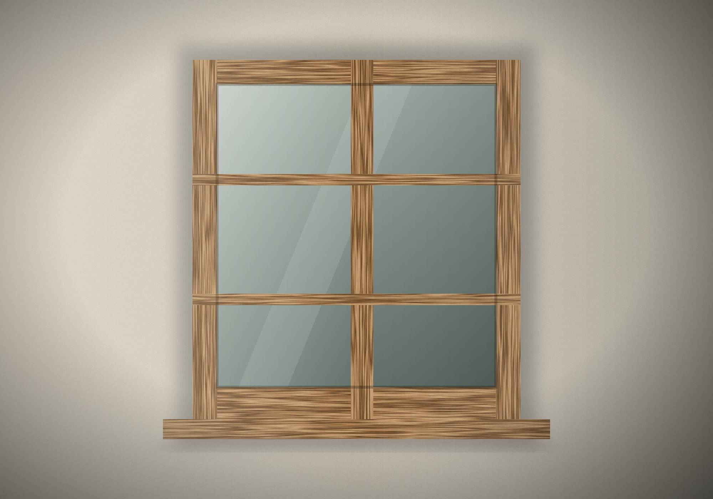
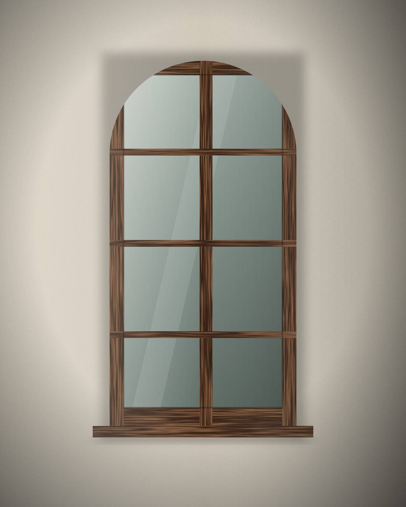
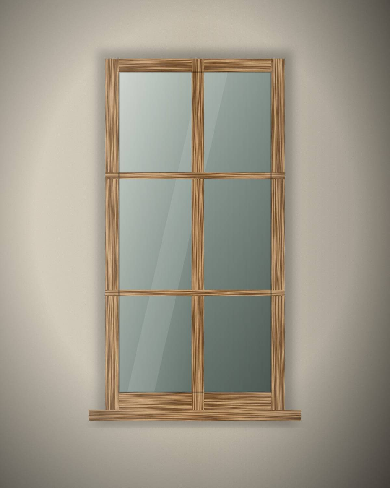
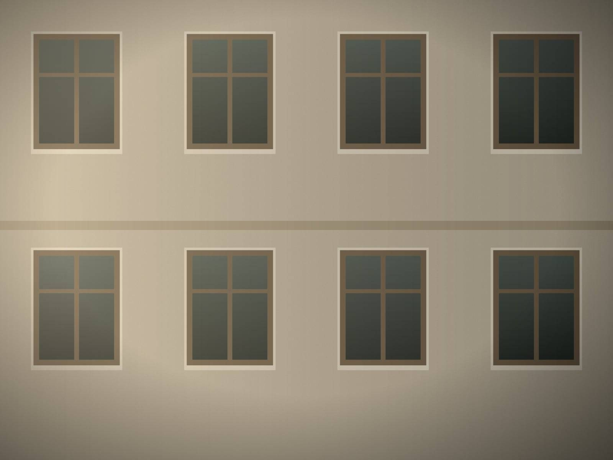
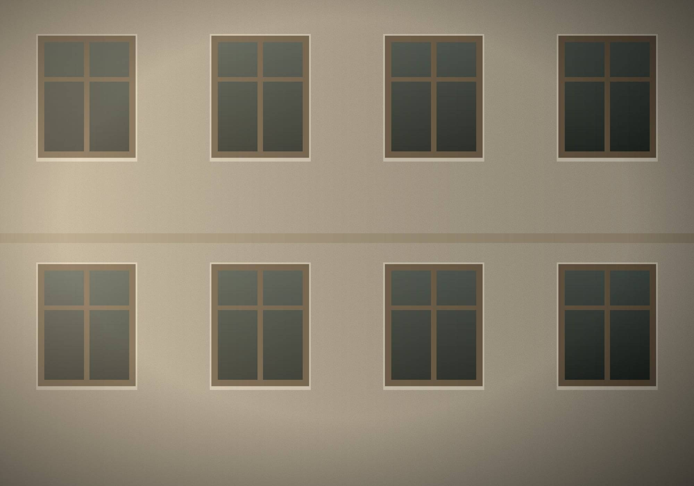

Wooden Window
A solid wood window built to your opening, your architecture and the way you live — and built to be repaired rather than replaced.

For decades we have chosen wood over plastic for windows. Not because it is the easiest choice, but because it is the one we can stand behind for a lifetime.
Windows decide how a house looks from the street and how it feels from inside. Their proportions, profiles and divisions shape a façade as much as its walls.
That is why we build each window for one opening. We start with the building, then draw the window — never the other way round.
Solid timber, finished with oils, waxes or paints chosen for the building. No imitation of wood — the real thing.
A wooden window is made of parts. When one part suffers, it can be repaired or replaced on its own, and the window continues to serve.
Cared for regularly, a wooden window can stay in a building for a very long time. It is meant to be maintained, not discarded.
Profiles, glazing bars and proportions that belong to the house — whether it was built last year or two centuries ago.

Every window is made to measure. Older buildings rarely have two identical openings — we follow the building rather than a standard size.
We draw or record mouldings and bars so the window speaks the language of the façade.
For older buildings we repair what can be repaired and reproduce what cannot, in close dialogue with you, your architect and, where involved, the heritage authorities.
Solid timber and traditional joints, with wood species chosen for exposure and use.
Glazing, seals and hardware are specified per project. Requirements for insulation and performance depend on the building and local regulations — we discuss them openly rather than promising figures in advance.
A solid wood window built to your opening, your architecture and the way you live — and built to be repaired rather than replaced.

Divided panes, slender bars and quiet profiles — a window in the language of older houses, made for homes that want to keep it.
When an original window cannot be saved, we study it closely and rebuild it — profiles, proportions and joinery — so the building keeps its face.

Surveying, repairing and reproducing the wooden windows of a public library, so the building could keep its original character.

Tall classroom windows, repaired and renewed so that a school building could keep its rhythm and its light.
A photograph of the façade and approximate measurements are enough to begin. We will tell you honestly what we would do — repair, reproduce or build new.
Serbia · Switzerland · Europe